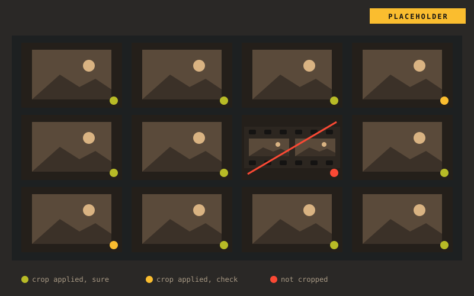
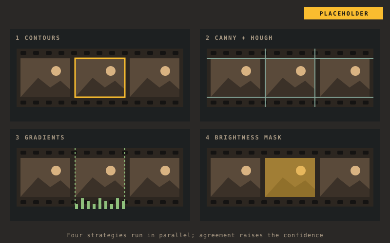
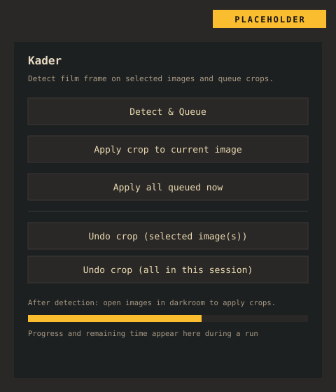
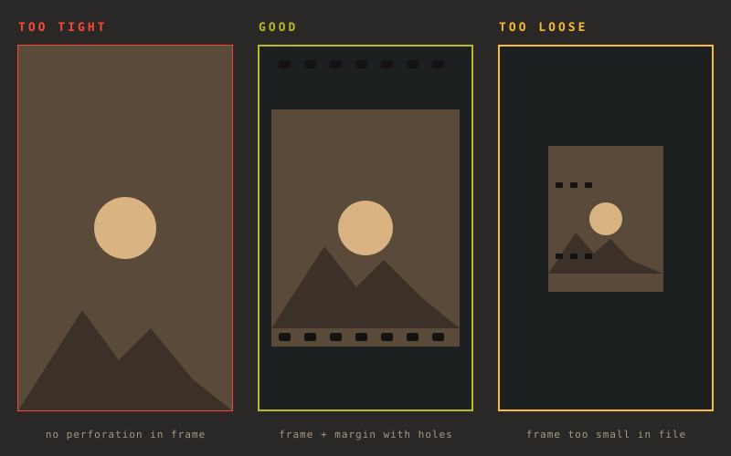
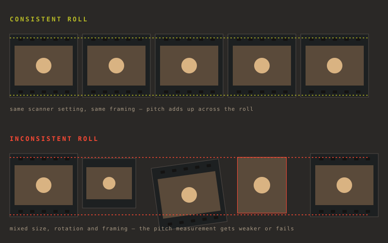

Finds the film frame
Findet den Filmrahmen
When you digitize negatives with a camera, the film strip and table stay in the picture. Kader detects the frame and suggests a crop. RAW files are developed first, JPEG, TIFF and PNG are read directly.
Beim Abfotografieren von Negativen bleiben Filmstreifen und Tisch im Bild. Kader erkennt den Rahmen und schlägt einen Zuschnitt vor. RAW-Dateien werden vorher entwickelt, JPEG, TIFF und PNG direkt gelesen.
Scale from the perforation
Maßstab aus der Perforation
Each subfolder is one roll. The hole spacing of 35 mm film gives the exact scale of the roll, so the crop size is known and each image only has to find its position.
Jeder Unterordner ist eine Rolle. Der Lochabstand von 35-mm-Film liefert den genauen Maßstab der Rolle, die Crop-Größe steht also fest, und jedes Bild muss nur noch seine Position finden.
Web UI for the check
Web-Oberfläche zur Kontrolle
Tiles sorted green, yellow and red, a crop editor with drag handles and alternative candidates, and re-detection of a selection with other settings. Accept with A, skip with S.
Kacheln nach Grün, Gelb und Rot, ein Crop-Editor mit Ziehgriffen und alternativen Kandidaten und Neu-Erkennung einer Auswahl mit anderen Einstellungen. Akzeptieren mit A, überspringen mit S.
Output where you work
Ausgabe dorthin, wo du arbeitest
Cropped copies, a crop list as JSON and CSV, Lightroom XMP sidecars, RawTherapee profiles or straight into darktable. The web UI suggests one and explains all of them.
Zugeschnittene Kopien, eine Crop-Liste als JSON und CSV, Lightroom-XMP-Sidecars, RawTherapee-Profile oder direkt in darktable. Die Web-Oberfläche schlägt eins vor und erklärt alle.
Straightens tilted frames
Stellt schiefe Rahmen gerade
The detection also measures how far a frame is tilted, up to about ±9°. One key (T) straightens the image in the editor, one button a whole selection.
Die Erkennung misst auch, wie schief ein Rahmen liegt, bis etwa ±9°. Eine Taste (T) stellt das Bild im Editor gerade, ein Knopf eine ganze Auswahl.
Non-destructive
Nicht destruktiv
The scans are never changed. Sidecars are added to, not replaced. Go back to the review, change something and press Finish again: only what changed is written.
Die Scans werden nie verändert. Sidecars werden ergänzt, nicht ersetzt. Zurück zur Prüfung, etwas ändern und erneut Fertig: Geschrieben wird nur, was sich geändert hat.
Check the yellow ones, skip the rest
Prüfe die gelben, spare dir den Rest
After the detection the web UI opens in your browser. Green crops can usually stay. Yellow ones deserve a look. Red images are not cropped unless you fix or accept them, so nothing is guessed.
Nach der Erkennung öffnet sich die Web-Oberfläche im Browser. Grüne Zuschnitte können meist bleiben. Gelbe verdienen einen Blick. Rote Bilder werden nicht zugeschnitten, außer du korrigierst oder akzeptierst sie, es wird also nichts geraten.
- Each image shows which factors make up its confidence
- Change the green and yellow thresholds in the web UI if too much lands in one color
- Size to whole roll and Re-detect selection fix whole groups at once
- The label goes along to the target: as a color label in darktable, RawTherapee and Lightroom, as a
labelcolumn in the crop list
- Jedes Bild zeigt, aus welchen Faktoren sich seine Konfidenz zusammensetzt
- Ändere die Grün- und Gelb-Schwelle in der Web-Oberfläche, wenn zu viel in einer Farbe landet
- Größe auf Rolle und Auswahl neu erkennen korrigieren ganze Gruppen auf einmal
- Das Label geht mit ans Ziel: als Farblabel in darktable, RawTherapee und Lightroom, als Spalte
labelin der Crop-Liste

See what the detection found
Sieh, was die Erkennung gefunden hat
Four strategies run side by side: contours, Canny and Hough lines, brightness gradients and a brightness mask for under-exposed images. Where they agree, the confidence goes up. For a single image, the detection can write a debug image with every candidate it considered.
Vier Strategien laufen nebeneinander: Konturen, Canny- und Hough-Linien, Helligkeitsverläufe und eine Helligkeitsmaske für unterbelichtete Bilder. Wo sie übereinstimmen, steigt die Konfidenz. Für ein einzelnes Bild kann die Erkennung ein Debug-Bild mit allen betrachteten Kandidaten schreiben.
- Run
python3 kader.py --debug -o out.jpg scan.jpgfor one image - The JSON output holds
x,y,width,height, the confidence and the review flag - In the web UI the crop editor offers the other candidates to pick from
- Führe
python3 kader.py --debug -o out.jpg scan.jpgfür ein einzelnes Bild aus - Die JSON-Ausgabe enthält
x,y,width,height, die Konfidenz und das Kontroll-Flag - In der Web-Oberfläche bietet der Crop-Editor die anderen Kandidaten zur Auswahl an

Or start it from darktable
Oder aus darktable heraus starten
As a darktable plugin, Kader exports the selected RAWs itself, opens the same web UI and applies the finished plan as a normal history step. A status line shows whether the server is starting, running or stopped.
Als darktable-Plugin exportiert Kader die ausgewählten RAWs selbst, öffnet dieselbe Web-Oberfläche und wendet den fertigen Plan als normalen Verlaufsschritt an. Eine Statuszeile zeigt, ob der Server startet, läuft oder gestoppt ist.
- Review starten exports the selection, runs the detection and opens the web UI
- Plan anwenden applies the crops once you pressed Finish in the web UI
- Crop & Farben zurücksetzen turns the crop off and clears the red, yellow and green labels (two clicks)
- A direct mode without the web UI is still there: Detect & Queue, Apply all queued now and two Undo crop buttons
- Review starten exportiert die Auswahl, lässt die Erkennung laufen und öffnet die Web-Oberfläche
- Plan anwenden wendet die Zuschnitte an, sobald du in der Web-Oberfläche Fertig gedrückt hast
- Crop & Farben zurücksetzen schaltet den Zuschnitt ab und leert die Labels rot, gelb und grün (zwei Klicks)
- Ein direkter Modus ohne Web-Oberfläche ist weiter da: Detect & Queue, Apply all queued now und zwei Knöpfe Undo crop

How it works
So funktioniert es
The detection and the web UI do not depend on any photo tool. Only the two ends are swappable: a RAW converter on the way in (only for RAW files) and a target on the way out.
Erkennung und Web-Oberfläche hängen von keinem Fotoprogramm ab. Nur die beiden Enden sind austauschbar: ein RAW-Konverter auf dem Weg hinein (nur für RAW-Dateien) und ein Ziel auf dem Weg hinaus.
- RAWs are developed at full resolution and without an existing crop; one session uses exactly one converter, so all images of a roll share the same frame
- With RAW and JPEG of the same name side by side, only the RAW counts
- Running the same folder again continues the last session: new images are added and analysed, earlier decisions stay
- The server stops after 30 minutes without activity; the session stays on disk
- RAWs werden in voller Auflösung und ohne vorhandenen Crop entwickelt; eine Sitzung nutzt genau einen Konverter, damit alle Bilder einer Rolle denselben Rahmen haben
- Liegen RAW und JPEG gleichen Namens nebeneinander, zählt nur das RAW
- Derselbe Ordner noch einmal setzt die letzte Sitzung fort: Neue Bilder werden ergänzt und analysiert, frühere Entscheidungen bleiben
- Der Server beendet sich nach 30 Minuten ohne Aktivität; die Sitzung bleibt auf der Platte
Usage
Nutzung
- Start Kader with the folder of scans:
kader ~/Scans/2026-09. With the Windows or Linux package, double-click it and pick the folder. - Wait for the detection. The web UI opens in your browser.
- At the top, pick the target: what Finish writes. One is already suggested.
- Check the yellow and red images, fix crops in the editor, straighten tilted frames.
- Press Finish. The result is written at once and shown per image at the top.
- Not happy? Back to review, change it and press Finish again.
- Starte Kader mit dem Ordner der Scans:
kader ~/Scans/2026-09. Mit dem Paket für Windows oder Linux: doppelklicken und den Ordner wählen. - Warte auf die Erkennung. Die Web-Oberfläche öffnet sich im Browser.
- Wähle oben das Ziel: was Fertig schreibt. Eins ist schon vorgeschlagen.
- Prüfe die gelben und roten Bilder, korrigiere Zuschnitte im Editor, stelle schiefe Rahmen gerade.
- Drücke Fertig. Das Ergebnis wird sofort geschrieben und oben je Bild angezeigt.
- Nicht zufrieden? Zurück zur Prüfung, ändern und erneut Fertig.
| OptionOption | MeaningBedeutung |
|---|---|
--target | Target, see below (default: suggested from the folder)Ziel, siehe unten (Standard: aus dem Ordner vorgeschlagen) |
--converter | darktable, rawtherapee, rawpy |
--films 33 34 | Only these rolls (subfolders)Nur diese Rollen (Unterordner) |
--new | Analyse again instead of continuingNeu analysieren statt fortsetzen |
--tui | Status display in the terminal, for a NAS or SSHStatusanzeige im Terminal, für NAS oder SSH |
--bind 0.0.0.0 | Reachable from the network (read the security note in the README first)Im Netzwerk erreichbar (vorher den Sicherheitshinweis im README lesen) |
kader check FOLDER lists the available converters and the suggested target.
kader check ORDNER zeigt die verfügbaren Konverter und das vorgeschlagene Ziel.
Targets
Ziele
| TargetZiel | WritesSchreibt | StraightensStellt gerade |
|---|---|---|
copies | Cropped copies per roll, plus the crop listZugeschnittene Kopien je Rolle, dazu die Crop-Liste | yesja |
json | crops.json and crops.csv: crop in pixels and normalised, angle, labelcrops.json und crops.csv: Crop in Pixeln und normiert, Winkel, Label | angle in the fileWinkel in der Datei |
xmp | Adobe sidecar for Lightroom and Camera Raw: crop and color label (RAWs only)Adobe-Sidecar für Lightroom und Camera Raw: Crop und Farblabel (nur RAWs) | nonein |
rawtherapee | .pp3 profile: crop and color label.pp3-Profil: Crop und Farblabel | nonein |
darktable | Through the Lua plugin, as a history stepÜber das Lua-Plugin, als Verlaufsschritt | yesja |
The xmp and rawtherapee targets are not yet tested against Lightroom and RawTherapee themselves. Capture One is not supported. The limits of each target are listed in the web UI and in the README.
Die Ziele xmp und rawtherapee sind noch nicht gegen Lightroom und RawTherapee selbst getestet. Capture One wird nicht unterstützt. Die Grenzen jedes Ziels stehen in der Web-Oberfläche und im README.
Confidence and labels
Konfidenz und Labels
| ConfidenceKonfidenz | LabelLabel | What happensWas passiert |
|---|---|---|
| 0.5 and upab 0,5 | GreenGrün | CroppedZugeschnitten |
| 0.3 up to 0.50,3 bis 0,5 | YellowGelb | Cropped, marked for reviewZugeschnitten, zur Kontrolle markiert |
| Below 0.3Unter 0,3 | RedRot | Not cropped unless you fix or accept itNicht zugeschnitten, außer du korrigierst oder akzeptierst es |
The confidence combines size agreement with the roll, edge score, exposure and how reliable the roll's scale is. Rolls without a confirmed scale get half the confidence, because their size can be off for the whole roll without any sign of it. The thresholds are defaults and can be changed in the web UI.
Die Konfidenz verbindet Größenübereinstimmung mit der Rolle, Kanten-Score, Belichtung und wie verlässlich der Maßstab der Rolle ist. Rollen ohne bestätigten Maßstab bekommen die halbe Konfidenz, weil ihre Größe für die ganze Rolle danebenliegen kann, ohne dass es sich zeigt. Die Schwellen sind Standardwerte und lassen sich in der Web-Oberfläche ändern.
Frame the negative so the detection can measure it
Negative so scannen, dass die Erkennung sie messen kann
The hole spacing of 35 mm film (4.7625 mm) is a physical constant. Kader uses it to work out the exact scale of a roll — but only if the perforation is actually in the scan.
Der Lochabstand von 35-mm-Film (4,7625 mm) ist eine physikalische Konstante. Kader nutzt sie, um den genauen Maßstab einer Rolle zu bestimmen — aber nur, wenn die Perforation überhaupt mit im Scan ist.
- Leave a visible margin with the holes on at least one edge, ideally both
- Don't crop tight to the image content when scanning — 6 of the rolls tested so far had no perforation at all, and dropped from ~93% to ~41% hit rate
- Frame the negative so it fills roughly 80–95% of the file, not edge-to-edge and not with a lot of empty space around it
- Lass an mindestens einer Kante, besser beiden, einen sichtbaren Rand mit den Löchern stehen
- Scanne nicht randscharf bis an den Bildinhalt — 6 der bisher getesteten Rollen hatten gar keine Perforation im Scan und fielen von ~93 % auf ~41 % Trefferquote
- Der Rahmen soll etwa 80–95 % der Datei füllen, weder randscharf noch mit viel Leerraum drumherum
Full guide: scan-howto.en.md · auf Deutsch: scan-howto.md
Ausführliche Anleitung: scan-howto.md · in English: scan-howto.en.md

Scan a whole roll the same way
Eine Rolle durchgängig gleich scannen
The pitch measurement sums the autocorrelation over every image of a roll, because the film sits in the same place in each scan. Keep the scanner setting and the framing the same across the roll, and scan more than a couple of images — from about twelve on, Kader can cross-check the measurement against itself.
Die Takt-Messung summiert die Autokorrelation über alle Bilder einer Rolle, weil der Film in jedem Scan an derselben Stelle liegt. Halte Scanner-Einstellung und Bildausschnitt über die ganze Rolle gleich und scanne mehr als nur ein paar Bilder — ab etwa zwölf kann Kader die Messung gegen sich selbst prüfen.
- Don't change the scanner preset partway through a roll
- Keep the film holder clean; its own pattern can be mistaken for perforation
- Single, standalone negatives work too, but capture both edges and scan sharp — there is no second half to cross-check against
- Wechsle das Scanner-Preset nicht mitten in einer Rolle
- Halte den Filmhalter sauber; sein eigenes Muster kann mit der Perforation verwechselt werden
- Auch einzelne, lose Negative funktionieren — dann aber beide Ränder erfassen und scharf scannen, denn es gibt keine zweite Hälfte zum Gegenprüfen

Detected film formats
Erkannte Filmformate
| FormatFormat | Aspect ratioSeitenverhältnis |
|---|---|
| 35 mm 135 (default)Kleinbild 135 (Standard) | 2:3 |
| Medium format 6×6Mittelformat 6×6 | 1:1 |
| Medium format 6×4.5Mittelformat 6×4,5 | 4:5 |
| Medium format 6×7Mittelformat 6×7 | 6:7 |
| Medium format 6×9Mittelformat 6×9 | 2:3 |
Where it stands
Wo es steht
The workflow is complete: folder in, web UI, five targets, darktable optional. The detection hits about 87 % of the frames on 62 test rolls (about 84 % on undeveloped RAW negatives). The main error is a constant size offset per roll, not scatter inside a roll, so a whole roll can be slightly off together.
Der Ablauf ist vollständig: Ordner hinein, Web-Oberfläche, fünf Ziele, darktable optional. Die Erkennung trifft auf 62 Testrollen etwa 87 % der Rahmen (etwa 84 % auf nicht entwickelten RAW-Negativen). Der Hauptfehler ist ein konstanter Größenversatz je Rolle, keine Streuung innerhalb der Rolle, eine ganze Rolle kann also gemeinsam leicht danebenliegen.
The confidence has become more honest: about 96 % of the green results are right, and rolls whose scale could not be confirmed are marked down instead of looking sure. For rolls without perforation in the scan this is not solved, only shown.
Die Konfidenz ist ehrlicher geworden: Etwa 96 % der grünen Ergebnisse stimmen, und Rollen, deren Maßstab sich nicht bestätigen ließ, werden abgewertet, statt sicher zu wirken. Für Rollen ohne Perforation im Scan ist das nicht gelöst, nur ausgewiesen.
| NextAls Nächstes | GoalZiel |
|---|---|
| Real imagesEchte Bilder | Before and after examples and screenshots of the web UI on this pageVorher-nachher-Beispiele und Bildschirmfotos der Web-Oberfläche auf dieser Seite |
| Test the sidecarsSidecars prüfen | Check the xmp and rawtherapee output in Lightroom and RawTherapee themselvesDie Ausgabe von xmp und rawtherapee in Lightroom und RawTherapee selbst prüfen |
| Learn from feedbackAus Rückmeldungen lernen | Use the corrections made in the web UI to find where the detection failsDie Korrekturen aus der Web-Oberfläche nutzen, um zu finden, wo die Erkennung scheitert |
Calibration
Kalibrierung
The reference data comes from the same web UI with the reviews target. A reference test shows how many detected crops lie within tolerance of your hand crops, and tiles are marked hit or miss. Corrections and accepted crops are saved as ground truth.
Die Referenzdaten kommen aus derselben Web-Oberfläche mit dem Ziel reviews. Ein Referenz-Test zeigt, wie viele erkannte Crops innerhalb der Toleranz zu deinen Handcrops liegen, und Kacheln tragen die Marke Treffer oder Abweichung. Korrekturen und bestätigte Crops werden als Ground Truth gespeichert.
- Start it with
./start_review_gui.sh, or--films 33 34for single rolls - Measure with
tools/eval.py(hit rate, leave-one-film-out)
- Starte es mit
./start_review_gui.sh, oder--films 33 34für einzelne Rollen - Messen mit
tools/eval.py(Trefferquote, Leave-One-Film-Out)
Installation
Installation
Download (Windows, Linux)
Herunterladen (Windows, Linux)
No Python and no terminal: download Kader-…-windows-x64.exe or Kader-…-x86_64.AppImage from the release page and double-click it. A dialog asks for the folder, the review opens in the browser, and a small window shows the progress. RAWs are developed without other programs. The exe is not signed (SmartScreen: More info → Run anyway); make the AppImage executable once.
Ohne Python und ohne Terminal: Kader-…-windows-x64.exe oder Kader-…-x86_64.AppImage von der Release-Seite laden und doppelklicken. Ein Dialog fragt nach dem Ordner, die Prüfung öffnet sich im Browser, und ein kleines Fenster zeigt den Fortschritt. RAWs werden ohne weitere Programme entwickelt. Die exe ist nicht signiert (SmartScreen: Weitere Informationen → Trotzdem ausführen); das AppImage einmal ausführbar machen.
With Python, without darktable
Mit Python, ohne darktable
Sets up its own environment in ~/.local/share/kader/venv with OpenCV, NumPy, Pillow and rawpy, and links the kader command to ~/.local/bin. By hand: pip install ".[raw]".
Richtet eine eigene Umgebung unter ~/.local/share/kader/venv mit OpenCV, NumPy, Pillow und rawpy ein und verlinkt den Befehl kader nach ~/.local/bin. Von Hand: pip install ".[raw]".
As a darktable plugin
Als darktable-Plugin
- Install darktable 4.0+ with Lua support.
- Run
./install.shin the cloned folder. - Restart darktable and enable contrib → Kader in the Script Manager. The panel is called Kader.
- Installiere darktable 4.0+ mit Lua-Unterstützung.
- Führe
./install.shim geklonten Ordner aus. - Starte darktable neu und schalte im Script Manager contrib → Kader ein. Das Panel heißt Kader.
Coming from Auto Crop Negative: register the plugin again in the Script Manager. Cache, settings and the learned crop convention start fresh.
Umstieg von Auto Crop Negative: Das Plugin im Script Manager neu registrieren. Cache, Einstellungen und die gelernte Crop-Konvention beginnen neu.
Questions
Fragen
Do I need darktable?Brauche ich darktable?
No. Kader runs on its own with a web UI and writes cropped copies, a crop list or sidecars. darktable is one of five targets.
Nein. Kader läuft eigenständig mit einer Web-Oberfläche und schreibt zugeschnittene Kopien, eine Crop-Liste oder Sidecars. darktable ist eines von fünf Zielen.
Can I trust a green label?Kann ich einem grünen Label trauen?
Mostly, but not blindly. About 96 % of the green results on the test rolls were right. Look at a sample of the green images too, especially on rolls where the perforation is missing from the scan.
Meistens, aber nicht blind. Etwa 96 % der grünen Ergebnisse auf den Testrollen waren richtig. Sieh dir auch von den grünen Bildern eine Stichprobe an, besonders bei Rollen, auf deren Scans die Perforation fehlt.
Why are red images not cropped?Warum werden rote Bilder nicht zugeschnitten?
A wrong crop costs more than no crop. Below the yellow threshold Kader leaves the image alone and only labels it, unless you fix or accept it in the web UI.
Ein falscher Zuschnitt kostet mehr als kein Zuschnitt. Unter der Gelb-Schwelle lässt Kader das Bild in Ruhe und markiert es nur, außer du korrigierst oder akzeptierst es in der Web-Oberfläche.
Does it change my original files?Ändert es meine Originaldateien?
No. Copies go into a separate folder, sidecars only get the crop and color label added, and in darktable the crop is a normal history step.
Nein. Kopien landen in einem eigenen Ordner, Sidecars bekommen nur Crop und Farblabel ergänzt, und in darktable ist der Zuschnitt ein normaler Verlaufsschritt.
Why one roll per folder?Warum eine Rolle je Ordner?
Kader assumes a folder is one roll, shot with the same camera and distance, so the frame size is almost constant. It fixes the size once per roll and only solves the position per image.
Kader nimmt an, dass ein Ordner eine Rolle ist, mit gleicher Kamera und gleichem Abstand fotografiert, sodass die Rahmengröße fast konstant ist. Es legt die Größe einmal je Rolle fest und löst pro Bild nur die Position.
Can I run it on a NAS?Kann ich es auf einem NAS laufen lassen?
Yes. --tui shows the status in the terminal over SSH, and --bind makes the web UI reachable from another computer. Read the security note in the README before opening it to the network.
Ja. --tui zeigt den Stand per SSH im Terminal, und --bind macht die Web-Oberfläche von einem anderen Rechner aus erreichbar. Lies vor dem Öffnen ins Netzwerk den Sicherheitshinweis im README.
Why the name?Warum der Name?
In German film jargon, a “Kader” is a single frame on the film strip, exactly what the tool looks for. The project was called Auto Crop Negative before.
„Kader“ ist Filmjargon für ein Einzelbild auf dem Filmstreifen, genau das, was das Werkzeug sucht. Vorher hieß das Projekt Auto Crop Negative.